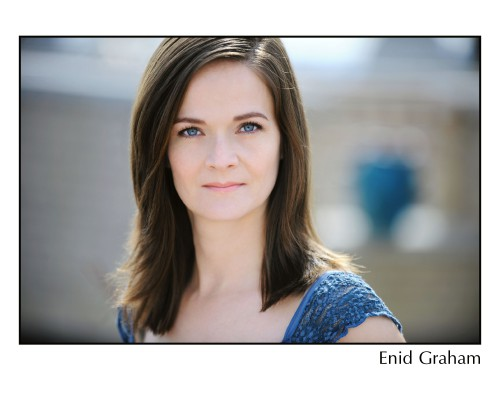
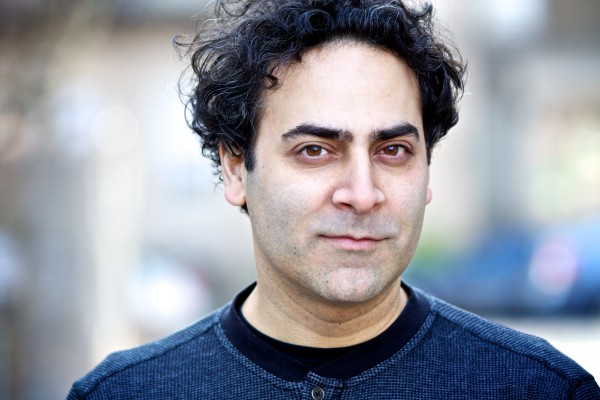
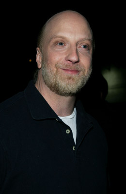
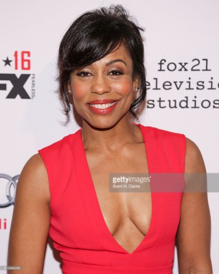
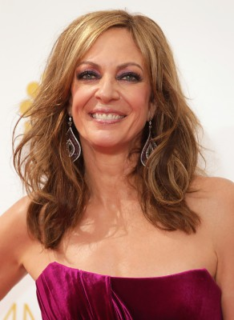
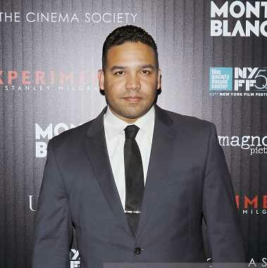
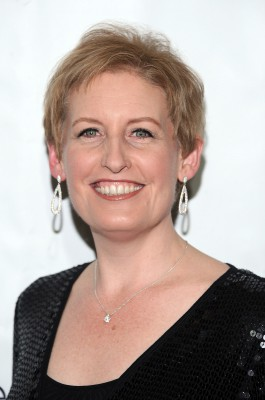
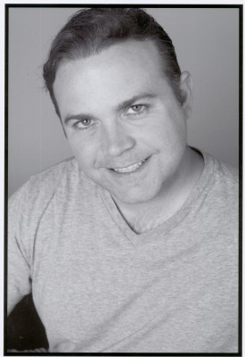

#969 Wie schreibt man Liebe?
Alternativ: The Rewrite

 IMDB-Wertung: 6.2 / 10
IMDB-Wertung: 6.2 / 10  Metascore: 51
Metascore: 51 
Drehbuch-Autor Keith Michaels (Hugh Grant) war auf der Karriereleiter schon ganz oben: Er gewann einen Oscar, verfügte über einen guten Ruf, britischen Charme und Witz und verdiente jede Menge Geld. Doch das ist fünfzehn Jahre her und Keith muss sich eingestehen, dass die Leiter nicht nur auf- sondern auch abwärts führt. Kurz vor seinem 50. Geburtstag ist er geschieden und hat schon lange kein erfolgreiches Drehbuch mehr abgeliefert. Zudem ist er inzwischen nahezu pleite. Glück für ihn, dass sein Agent einen Job für ihn hat - an einer Universität in Binghampton, einem kleinen Örtchen an der Ostküste, sucht man einen Dozenten für einen Kurs im Drehbuchschreiben und Keith, der fast vor dem Nichts steht, hat keine andere Wahl und nimmt das Angebot an. In Binghampton angekommen, beginnt er sofort eine Affäre mit der Studentin Karen (Bella Heathcote), die seinen Kurs besucht, und zerstreitet sich mit einer unterkühlten Kollegin (Allison Janney), die an der Uni über viel Einfluss verfügt.
Jahr: 2014
Dauer: 107 Minuten
FSK: 0
Land: USA Studio: Image EntertainmentTonspuren: DTS - ,
Untertitel: Deutsch,
Auflösung: 1080p (1920x800) Größe: 6184 MB
Genre: Komödie, Liebe
Regisseur: Marc Lawrence
Drehbuch: Marc Lawrence
Soundtrack: Clyde Lawrence
Darsteller:
 Hugh Grant als Keith Michaels
Hugh Grant als Keith Michaels-  Enid Graham als Trina
-  Jason Antoon als Greg Nathan
 Caroline Aaron als Ellen
Caroline Aaron als Ellen- Billy Griffith als TSA Agent
- Kevin Michael Kennedy als TSA Officer Kevin
- Bella Heathcote als Karen Gabney
- Lily Wen als Judy
- Olivia Luccardi als Chloe
-  Chris Elliott als Jim Harper
- J.K. Simmons als Dr. Hal Lerner
 Marisa Tomei als Holly Carpenter
Marisa Tomei als Holly Carpenter- Mark Nelson als Josh
- Bruce Sabath als Paul Prentiss
-  Karen Pittman als Naomi Watkins
 Veanne Cox als Clara Foss
Veanne Cox als Clara Foss-  Allison Janney als Professor Weldon
- Maggie Geha als Flo Bai
- Damaris Lewis als Maya
- Lauren Macklin als Rachel Anslow
- Nicole Patrick als Jessica
- Emily Morden als Andrea Stein-Rosen
- Annie Q. als Sara Liu
- Aja Naomi King als Rosa
- Andrew Keenan-Bolger als Billy Frazier
- Steven Kaplan als Clem Ronson
 Jeff Chena als Carousel Worker
Jeff Chena als Carousel Worker- Lauren V. Palmer als Dana Carpenter
-  Frank Harts als Paramedic
- Kevin Carolan als Billy's father
-  Liz Callaway als Mrs. Lerner
- Sean Patrick McGowan als Holly's Co-Worker
- Marc Bicking als College Professor , uncredited
- Paula Blum als Professor , uncredited
-  Chris J. Cullen als Neighbor , uncredited
- Sergine Dumais als Mary Weldon , uncredited
- Kelsey Graham als College Student , uncredited
- Richard Hutchins als Student , uncredited
- Jian Leonardo als Ellen's Assistant , uncredited
- Mike Malvagno als Frat boy , uncredited
- Claire Natale als Additional Voices , uncredited
- Daniel Reton als Friend at Oscars , uncredited
- Nancy Ellen Shore als Upscale Restaurant Patron , uncredited
- Monika Felice Smith als Student , uncredited
- Rebecca Sundstrom als Student , uncredited
- Cris Williams als College Student , uncredited
- Whit Baldwin als Doug
- Vanessa Wasche als Rona
- Shannon Marie Sullivan als Sue
- Jenny Neale als Jenny Glick
Datei: X:\2014(N-Z)\Wie schreibt man Liebe (2014, FSKo.Al., 1920x800).mkv seit 29.04.2015
Festplatte: HD 2013(I-Z)-2014(A-Z)
 Es gibt insgesamt 163 Filme in der Gruppe '2014(N-Z)'
Es gibt insgesamt 163 Filme in der Gruppe '2014(N-Z)'